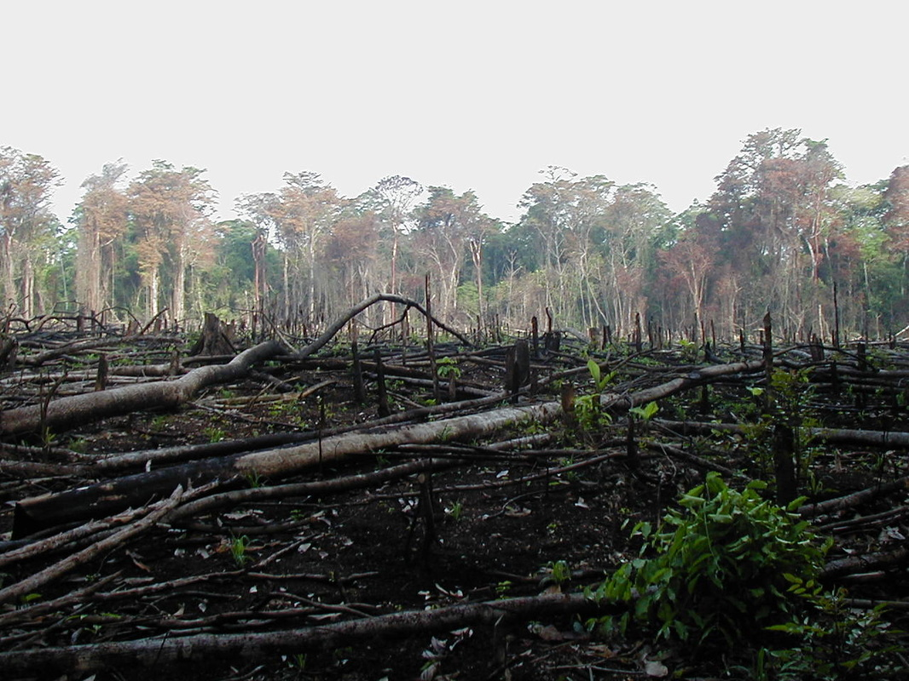
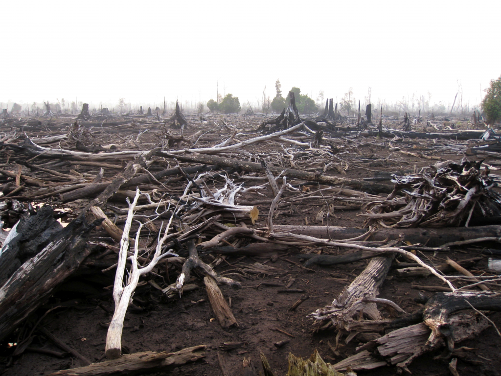
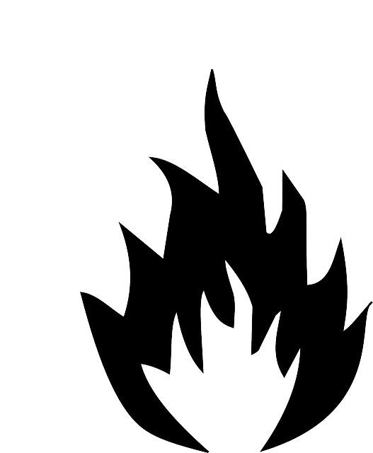
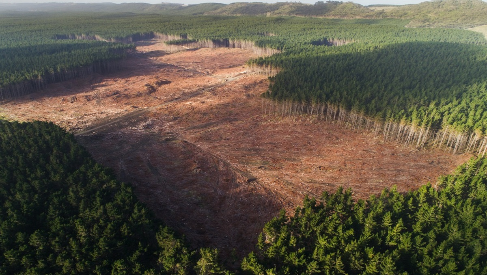
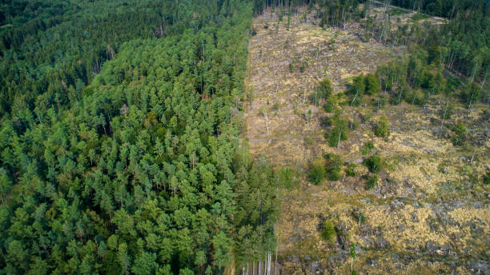

Habitat Loss
Site by Tim Goggin as an Artist Book for ENV197 at Wesleyan University. Site created for educational purposes.
Photo Credit: Flickr User Jami Dwyer
Types of Habitat Loss
Photo Credit: Rini Sulaiman
Habitat Destruction
Complete destruction of a habitat. For example, wildfires can cause habitat destruction.
Habitat Degradation
A process by which a habitat still exists, but becomes less able to handle wildlife. For example, runoff from agriculture can cause habitat degradation.
Habitat Fragmentation
Habitat being split into smaller, less effective pieces. For example, building a road through a forest would fragment the forest.
Habitat loss is defined as habitat becoming damaged, to the extent that it can no longer support the species living there. It can be caused by natural factors or by anthropogenic factors.

Photo credit: Getty Images User Ulet Ifanstasi
Photo credit to Taheer Photography
Natural causes of habitat loss include:
Anthropogenic causes of habitat loss include:
Photo Credit to istockphoto.com User fazon1
Photo Credit to istockphoto.com User ollo